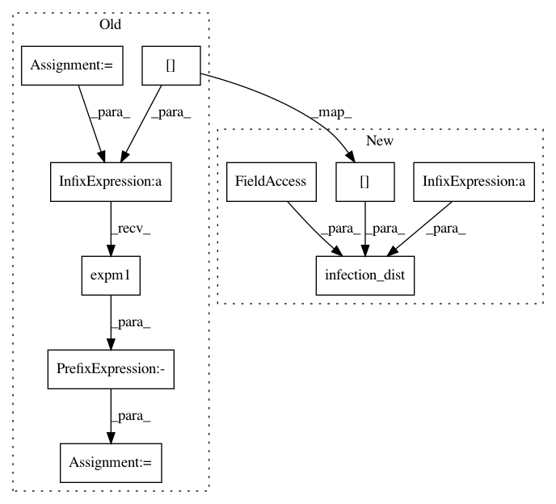

cf0f0a8fdfcba2fbfc8447a241deb64edff8b3d9,pyro/contrib/epidemiology/sir.py,SimpleSIRModel,transition_bwd,#SimpleSIRModel#Any#Any#Any#Any#,98
Before Change
I2R = prev["I"] - curr["I"] + S2I
// Condition on flows between compartments.
prob_s = -(rate_s * prev["I"]).expm1()
pyro.sample("S2I_{}".format(t),
dist.ExtendedBinomial(prev["S"], prob_s),
obs=S2I)
pyro.sample("I2R_{}".format(t),
After Change
// Condition on flows between compartments.
pyro.sample("S2I_{}".format(t),
infection_dist(individual_rate=R0 / tau,
num_susceptible=prev["S"],
num_infectious=prev["I"],
population=self.population),
obs=S2I)
pyro.sample("I2R_{}".format(t),
dist.ExtendedBinomial(prev["I"], 1 / tau),
In pattern: SUPERPATTERN
Frequency: 4
Non-data size: 10
Instances
Project Name: uber/pyro
Commit Name: cf0f0a8fdfcba2fbfc8447a241deb64edff8b3d9
Time: 2020-04-28
Author: fritzo@uber.com
File Name: pyro/contrib/epidemiology/sir.py
Class Name: SimpleSIRModel
Method Name: transition_bwd
Project Name: uber/pyro
Commit Name: cf0f0a8fdfcba2fbfc8447a241deb64edff8b3d9
Time: 2020-04-28
Author: fritzo@uber.com
File Name: pyro/contrib/epidemiology/seir.py
Class Name: SimpleSEIRModel
Method Name: transition_fwd
Project Name: uber/pyro
Commit Name: cf0f0a8fdfcba2fbfc8447a241deb64edff8b3d9
Time: 2020-04-28
Author: fritzo@uber.com
File Name: pyro/contrib/epidemiology/sir.py
Class Name: SimpleSIRModel
Method Name: transition_fwd
Project Name: uber/pyro
Commit Name: cf0f0a8fdfcba2fbfc8447a241deb64edff8b3d9
Time: 2020-04-28
Author: fritzo@uber.com
File Name: pyro/contrib/epidemiology/seir.py
Class Name: SimpleSEIRModel
Method Name: transition_bwd